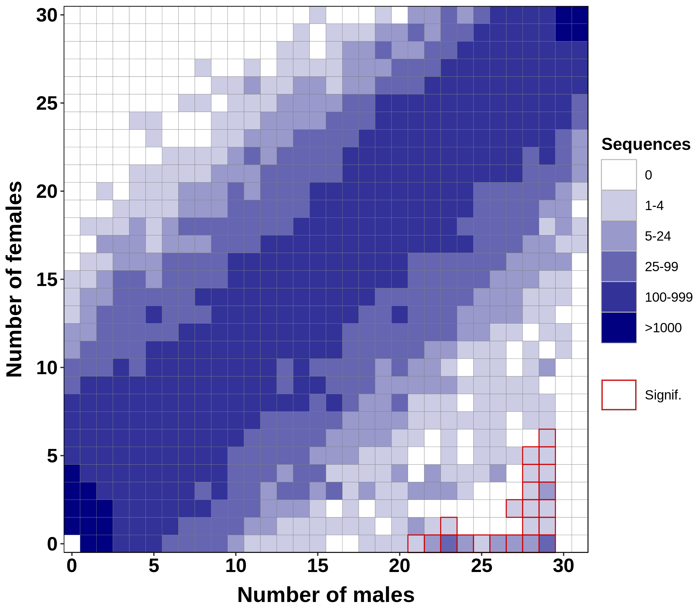
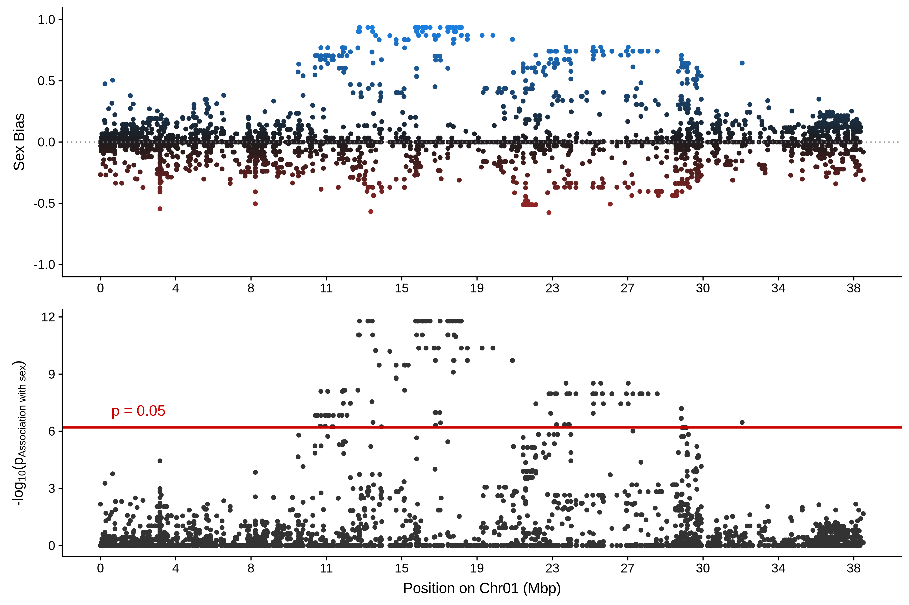

Example walkthrough¶
In this example, we will run RADSex on a public Oryzias latipes RAD-Sequencing dataset. We will detail each step of the process, highlight important details, and show how to use the R package radsex-vis to generate plots from the output of radsex. This guide assumes that radsex and the radsex-vis package have already been installed. For specific instruction about installing radsex and radsex-vis, check the Installation section. All reported times and resources usage were measured on a desktop computer with an Intel i7-8700K 4.7 GHz processor, 32 Gb of memory, and a standard 7200 RPM Hard Disk Drive. The input data, results (except for process), and figures can be found in the example directory.
Preparing the data¶
The RAD-Sequencing datasets used in this example are available on the Sequence Read Archive on NCBI. The reads were demultiplexed before being deposited on NCBI, and samples were grouped in two projects, males and females. The accession number for female samples is SRS662264, and the accession number for male samples is SRS662265. For convenience, simple scripts to download male and female samples from the EBI ftp can be found here for female samples and here for male samples. This dataset was published in Wilson et al 2014.
The population map describing the sex of each samples for this dataset can be found here. The genome used for mapping markers with radsex map was that of a HSOK strain, NCBI accession number GCA_002234695.1 (link). The chromosomes names file used to display chromosomes with nicer names in the genome mapping plot can be found here.
Note
RADSex uses file names to generate individual IDs. Therefore, individual names in the population map should correspond to the file names without their extensions. Check the file names and population map provided above for an example of how to build the population map from file names. More details about the population map can be found in the Population map section.
From now on, we will assume the following directory structure:
.
├─── samples
| ├────── xxx.fastq.gz
| ├────── xxx.fastq.gz
| ├────── ...
| └────── xxx.fastq.gz
├─── chromosomes_names.tsv
├─── genome.fasta
└─── popmap.tsv
Generating a coverage table for the entire dataset¶
The first step of RADSex is to create a table containing the coverage of each marker in each individual for the entire dataset; a marker is defined as a non-polymorphic sequence (no mismatches or SNPs). This step is performed with the process command :
radsex process --input-dir samples --output-file coverage_table.tsv --threads 8 --min-cov 1
The --input-dir parameter specifies the location of the demultiplexed reads directory, which is samples in our case. The --output-file parameter specifies the location of the output file (i.e. the table of coverage), which is coverage_table.tsv here. This step can be parallelized using the --threads parameters, which we set to 8 in our example; you should adjust this value based on your computer’s specifications. Finally, the --min-cov parameter specifies the minimum coverage for a marker to be considered present in an individual; if a marker has a coverage lower than the value of --min-cov in every individual, it will not be retained in the coverage table.
The resulting file coverage_table.tsv will be used as a base for all analyses implemented in radsex, but it is not used for any radsex-vis plots. For more information about this file, check the coverage-table-file section.
Note
In most cases, we advise to keep the value of --min-cov to 1 in order to retain all the information from the dataset in this step. Filtering for minimum coverage should be done in the following analysis steps, and it will be easier to try several minimum coverage values this way. If you are certain that all individuals in your dataset have high coverage, and you do not plan to run analyses with a minimum coverage of 1, you can increase this threshold.
With our setup, using 8 cores, this step completed in 9 min 25 seconds with a peak memory usage of 10.3 GB. The resulting coverage table used 5.1 GB of disk space.
Computing the distribution of markers between sexes¶
The main analysis implemented in radsex computes a table summarizing the distribution of all markers between males and females. This analysis is performed with the distrib command:
radsex distrib --input-file coverage_table.tsv --output-file distribution.tsv --popmap-file popmap.tsv --min-cov 5``
The --input-file parameter specifies the location of the coverage table generated in the previous step, which was coverage_table.tsv in our case. The --output-file parameter specifies the location of the output file, i.e the table of distribution of markers between males and females, which is distribution.tsv here. The --popmap-file parameter specifies the location of the population map (see the Population map section for details), which we named popmap.tsv in this example. Finally, the --min-cov parameter specifies the minimum coverage to consider a marker present in an individual, and was set to 5 here.
With our setup, this step completed in 36 seconds with a peak memory usage of 4 Mb.
The resulting file distribution.tsv is a tabulated file described in the Population map section. This file can be visualized with radsex-vis using the plot_sex_distribution function:
radsexvis::plot_sex_distribution("distribution.tsv", output_file_path = "distribution.png")
To generate a basic plot, the only required parameter is the full path to a distribution table (simplified as “distribution.tsv” in this example). The output_file_path parameters specifies the path to an output file where the figure will be saved; if this parameter is not specified, the plot will be generated in the default R graphic device. For a full description of the plot_sex_distribution() function, including additional parameters, check the TODO_RADSEXVIS_SECTION.
The resulting figure is displayed below:
This figure is a tile plot with number of males on the x-axis and number of females on the y-axis. The color of a tile at coordinates (x, y) indicates the number of markers that were present in any x males and any y females. For instance, in this figure, there were between 25 and 99 markers found in 29 males (not necessarily always the same 29 males) and in 0 females. Tiles for which association with sex is significant (chi-squared test, using Bonferroni correction) are highlighted in red. Many markers found predominantly in males are significantly associated with sex, indicating that an XX/XY system determines sex in this species. Interestingly, there are no markers found in all males or all but one males and absent from all females, i.e no markers found at position (30, 0) and (31, 0).
With our setup, this step completed in 36 seconds with a peak memory usage of 4 MB.
Extracting markers significantly associated with sex¶
The signif command of RADSex extracts all markers for which association with sex is significant. In this case, these markers are the ones represented by the tiles highlighted in red in the previous figure. To extract all significant markers from our dataset, run the following command :
radsex signif --input-file coverage_table.tsv --output-file significant_markers.tsv --popmap-file popmap.tsv --min-cov 5
The --input-file parameter specifies the location of the coverage table generated in the process step, which was coverage_table.tsv in our case. The --output-file parameter specifies the location of the output file, in this case a subset of the table of coverage, which we named significant_markers.tsv here. The --popmap-file parameter specifies the location of the population map (see the xx section for details), which we named popmap.tsv in this example. Finally, the --min-cov parameter specifies the minimum coverage to consider a marker present in an individual, and was set to 5 to match the value used in the previous analysis.
The subset of coverage table generated by signif can be visualized with radsex-vis the plot_coverage() function :
radsexvis::plot_coverage("significant_markers.tsv", output_file_path = "significant_markers.png", popmap_file_path = "popmap.tsv")
To generate a basic plot, the only required parameter is the full path to the subset of coverage table (simplified as “significant_markers.tsv” in this example). The output_file_path parameters specifies the path to an output file where the figure will be saved; if this parameter is not specified, the plot will be generated in the default R graphic device. The popmap_file_path parameter can be specified to color males and females IDs in the resulting figure. For a full description of the plot_coverage() function, including additional parameters, check the TODO_RADSEXVIS_SECTION.
The resulting figure is displayed below:

This figure is a heatmap with individuals on the x-axis and markers on the y-axis. The color of a tile at coordinates (x, y) indicates the coverage of a marker y in individual x. Both individuals and markers can be clustered based on this coverage, and clustering dendrograms are displayed by default. If a popmap is specified, males and females IDs are colored differently. In this example, two males cluster with the females, in agreement with the results from distrib where male-specific markers were always missing from two males. These two males are actually genetic females whose sex was mis-assigned.
Note
For convenience, significant markers can be exported in FASTA format, using the parameter –output-format fasta. Headers contain information about the sex distribution of each marker, as described in the Fasta files section.
With our setup, this step completed in 37 seconds with a peak memory usage of 6 MB.
Mapping markers to a reference genome¶
When a reference genome is available, markers can be aligned to it in order to locate sex-differentiated regions. This is done using the map command:
radsex map --input-file coverage_table.tsv --output-file mapping_results.tsv --popmap-file popmap.tsv --genome-file genome.fasta --min-cov 5
The --input-file parameter specifies the location of the coverage table generated in the process step, which was coverage_table.tsv in our case. The --output-file parameter specifies the location of the output file, in this case a table with mapping information, which we named mapping_results.tsv here. The --popmap-file parameter specifies the location of the population map (see the xx section for details), which we named popmap.tsv in this example. The --genome-file parameter specifies the location of reference genome file in FASTA format, which we named genome.fasta in this example. Finally, the --min-cov parameter specifies the minimum coverage to consider a marker present in an individual, and was set to 5 to match the value used in the previous analysis.
The resulting file mapping_results.tsv is a tabulated file described in the Alignment results section. This file can be visualized with radsex-vis using the plot_genome() function:
radsexvis::plot_genome("mapping_results.tsv", "genome.fasta.lengths", chromosomes_names_file_path = "chromosomes_names.tsv", output_file_path = "mapping_genome.png")
To generate a basic plot, the only required parameters are the full path to the mapping results table (simplified as “mapping_results.tsv” in this example), and the full path to the genome contig lengths generated by map (“genome.fasta.lengths” here). The output_file_path parameters specifies the path to an output file where the figure will be saved; if this parameter is not specified, the plot will be generated in the default R graphic device. The chromosomes_names_file_path parameter can be specified to rename the chromosomes with chosen IDs specified in the file. For a full description of the plot_genome() function, including additional parameters, check the TODO_RADSEXVIS_SECTION.
The resulting figure is displayed below:

This figure is a circos plot in which each sector corresponds to a chromosome, with all unplaced scaffolds regrouped in an additional sector (not shown in this example as there are no unplaced scaffolds in this genome). The top track gives the sex-bias of a marker, 1 if the marker is present in all males and no females, and -1 if the marker is present in all females and no males. The bottom track shows the probability of association with sex (chi-squared test, using Bonferroni correction).
Results for a specific region can be visualized with radsex-vis using the plot_contig() function:
radsexvis::plot_contig("mapping_results.tsv", "genome.fasta.lengths", "Chr01", chromosomes_names_file_path = "chromosomes_names.tsv", output_file_path = "mapping_contig.png")
This function uses the same parameters as plot_genome(), with the addition of a parameter giving the contig to be plotted, Chr01 here. For a full description of the plot_contig() function, including additional parameters, check the TODO_RADSEXVIS_SECTION.
The resulting figure is displayed below:
In this figure, both sex-bias and probability of association with sex, as defined in the genome plot, are plotted against position on the specified contig.
With our setup, this step completed in 9 min 36 seconds with a peak memory usage of 1.3 GB, most of the time being spent indexing the genome. If the genome is already indexed with BWA, this step completes in 55 seconds.
Going further¶
In this example, we showed the most commonly used functions of radsex and radsex-vis, mostly using default parameters. In general, it is recommended to run distrib with multiple values of coverage (for instance 1, 2, 5, and 10), to better understand the dataset.
To get the full information on each function of radsex, check the RADSex usage details section.